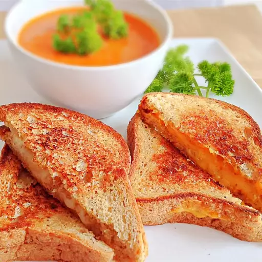

How to Make a Grilled Cheese Sandwich

The classic afternoon hot sandwich snack
The great American classic, there are few things more American than a grilled cheese sandwich while watching the American football game
This simple recipe only requires three simple ingredients so you can make this filling snack.
Ingredients
- 4 slices white bread
- 3 tablespoons butter, divided
- 2 slices Cheddar cheese
Steps
- Preheat a nonstick skillet over medium heat
- Generously butter one side of a slice of bread and place butter side down on skillet
- Add one slice of cheese ontop of the slice of bread you just put on the skillet
- Butter a second slice of bread and place it butter side up on top of the cheese
- Cook until lightly brown on one side and flip and continue cooking until the cheese is melting
- Repeat with the rest of the ingredients to make another grilled cheese sandwich